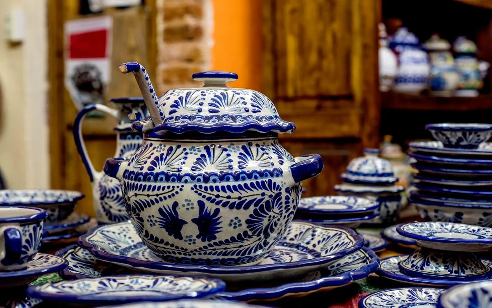

Talavera
Como parte de una tradición que viene desde el siglo XVII sobre la cerámica traída de españa; es que nace la talavera, un tipo de cerámica con simbolismo propio de la región de Puebla donde se desarrollo,
la talavera poblana es reconocida internacionalmente y hasta la fecha se sigue realizando bajo los canones antiguos, por lo tanto, es reconocida como artesanía mexicana.
